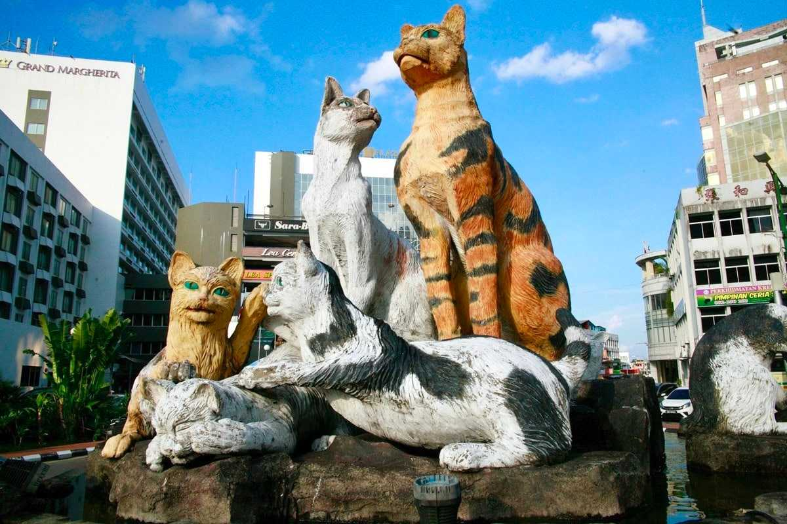

Welcome to Kuching
Kuching, capital of Sarawak, is named after the Malay word "cat". The city blends colonial architecture, Chinese shophouses, Malay kampongs and Dayak longhouses. Within 30 minutes, visitors can reach ancient rainforest.
The warm hospitality of its 800,000 residents defines Kuching's charm. Explorations with open heart reveal cultural traditions, and natural beauty that makes this city truly special.
